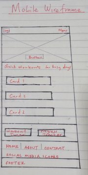
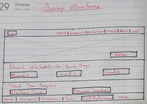

Site Name
Fitness for Busy Urban Professionals
This name represents a resource hub for urban professionals who want to incorporate fitness into their busy lifestyles. The name is simple, clear, and relevant to the target audience.
Optional domain availability: fitnessurbanpro.com
Site Purpose
The site provides practical resources for urban professionals to adopt sustainable fitness practices. It includes workout plans, nutrition tips, motivational content, and tools like a workout timer and progress tracker.
Scenarios
- What are some quick and effective workouts I can do during my lunch break?
- How can I stay consistent with my fitness routine despite my busy schedule?
Color Schema
Primary Color (#0074D9): Used for headings and buttons.
Secondary Color (#F5F5F5): Used for backgrounds.
Accent Color (#2ECC40): Used for links and interactive elements.
Typography
Headings: Roboto Bold
Body Text: Roboto Regular
Links: Roboto Italic
Wireframe
Mobile View
Desktop View
Note: These wireframes represent the layout of the home page, including sections for navigation, featured content, and a footer.